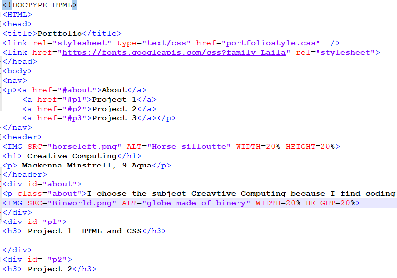
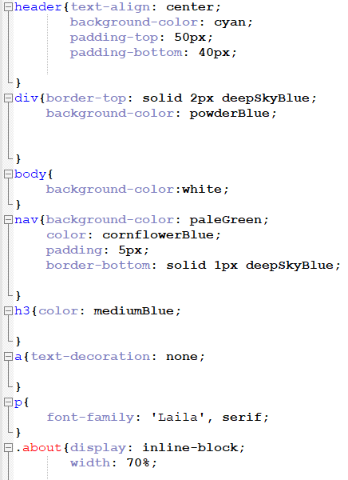

Our first project of the year was HTML and CSS and Networks. We spent the first lesson learning Binary and Hexadecimal then we learnt about how computers and networks use Binary to comunicate and send messages. I found this really interesting beacuse it was all things I never knew existed and happened all around me everyday. We quickly moved on to create our own website, without much guidence using our knowlage from years prior. Our task was to create a Portfolio Website to store our work throughout the year. We first looked at a website we liked for ideas to make our own website the best it could be. I looked at the World Wildlife Fund website and my main two takeaways were, try and keep the color sceme simple and not make it too busy and that it was interesting to be able to browse and scroll down through the website. I started pretty simple, make a title, header and div's. I secoundly moved on to create a navigation bar, like on the WWF website, to find your way easily to the different projects. After fixing up the asthetics I still had a few more lessons. I decided to try and make collapsable buttons to store my projects. I asked Mr Morffew and with his help found a page on W3Schools explaining how to do this. After implimenting this I re-fixed the asthetics to incorperate this element. I enjoyed this task, I love coding and a website is a very practical application as well as fun and creative. The pictures below show a photo of my HTML (left) and CSS (right), unfinished, from during my project.
 
Creative Computing
Mackenna Minstrell, 9 Aqua